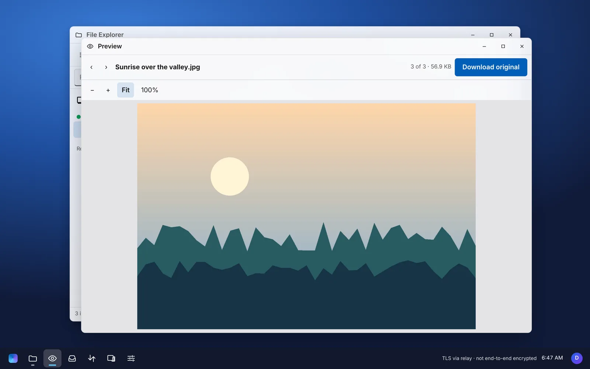
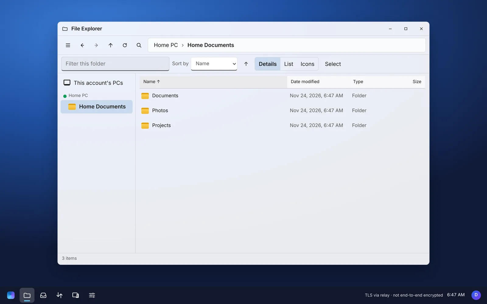
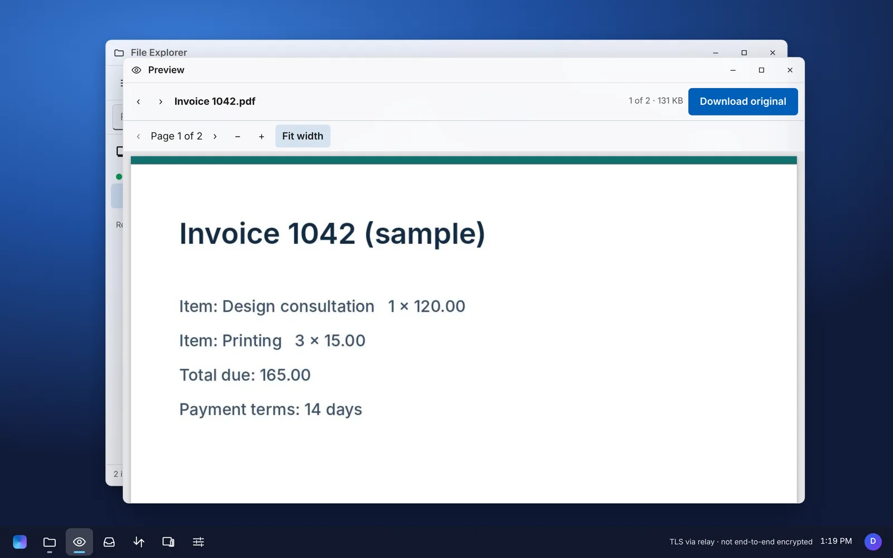
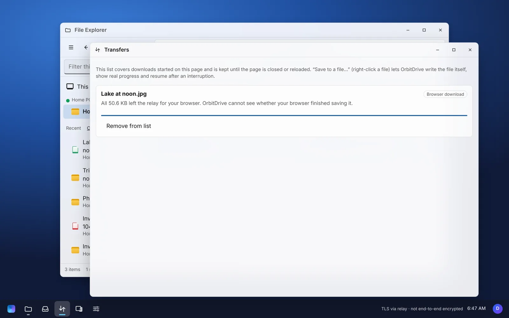
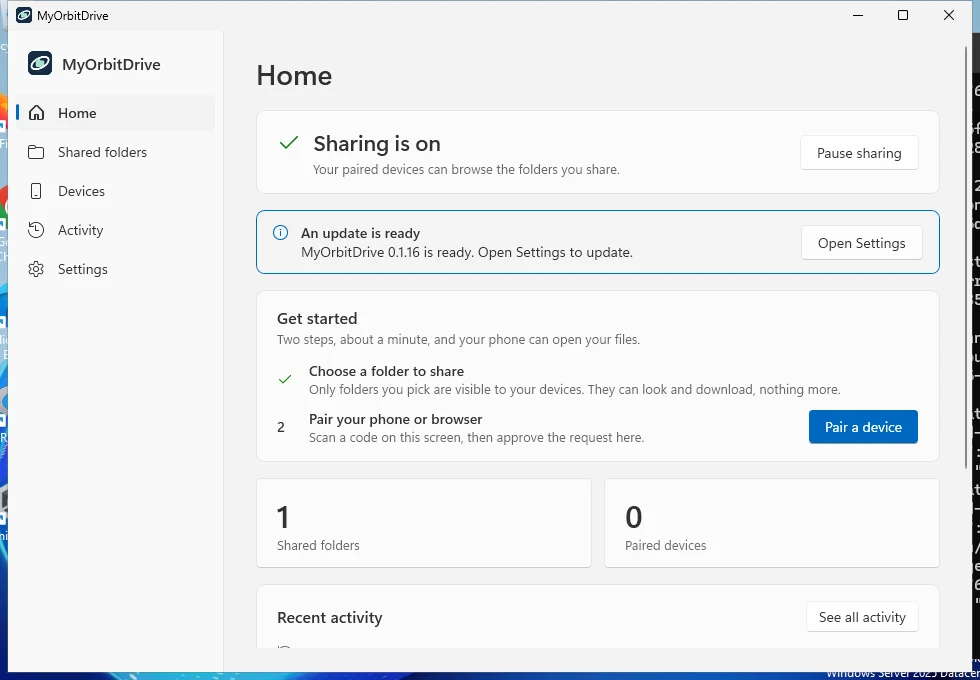
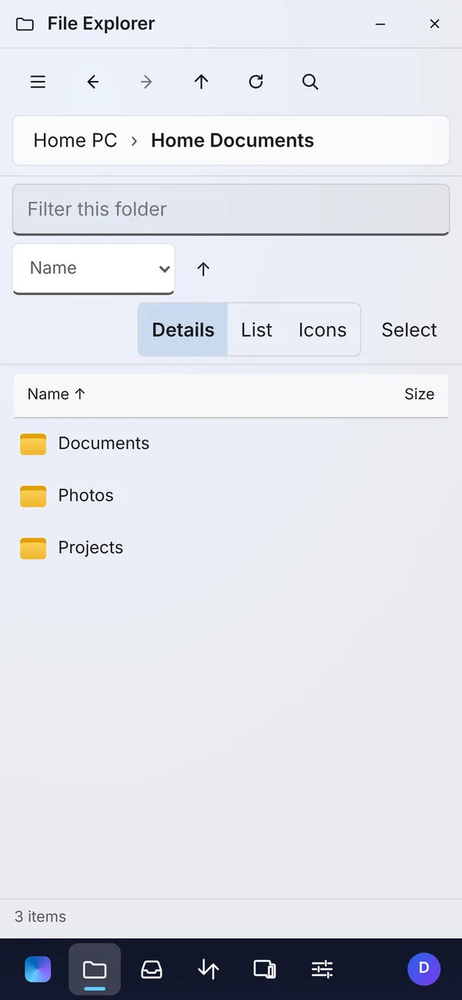
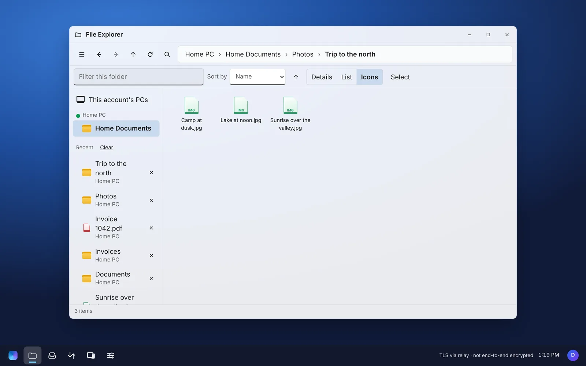
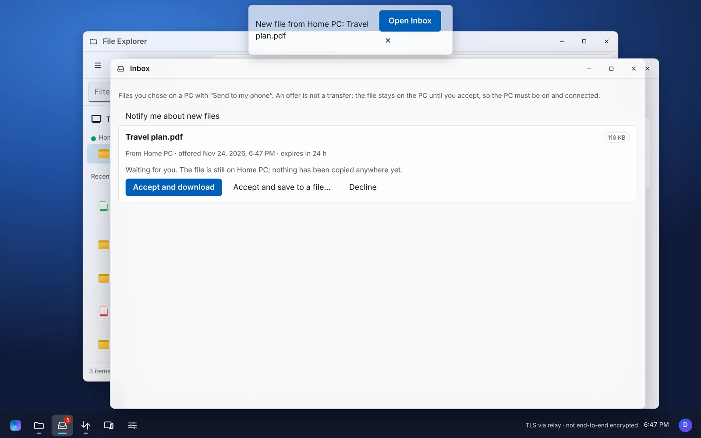
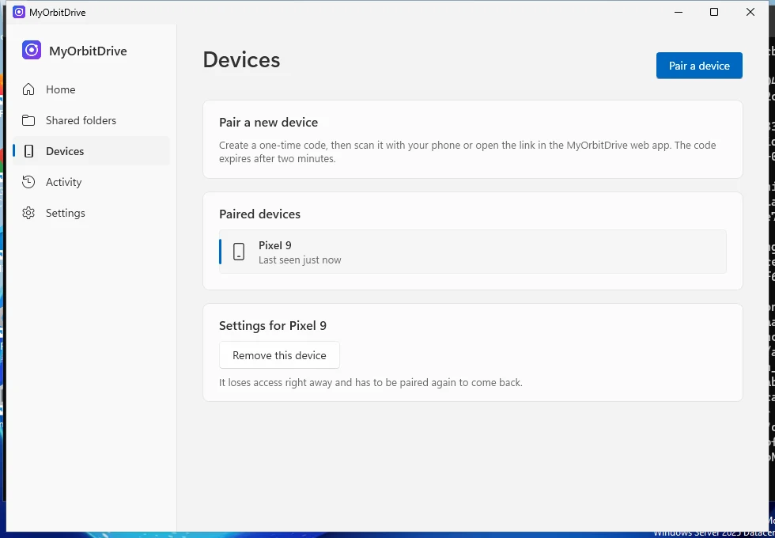

For Windows PCs Preview
Your PC files. Wherever you are.
Open the folders you choose from your phone or any browser. Browse, preview and download. Read-only by default, approved on your PC, and nothing is synced to a cloud drive.
The Windows app is an unsigned preview build. Windows may ask you to confirm before it runs.

How it works
Three steps. No router settings.
The PC app connects out to a relay, so there is nothing to open on your home network.
Install and choose folders
Install the app on your Windows PC and tick the folders to share. Nothing else is visible.
Pair with a code or QR
Show a one-time code on the PC, scan or type it on your phone, then approve the request on the PC.
Browse from anywhere
Sign in to the web app on any browser. Your PC must be on, awake and running the app.
Try the pairing flow
This is how the code works. It is generated here in your browser and connects to nothing.
Product
See what you get
These are real screens from the running app with a demo account and sample files.
A familiar file explorer
Folders, sorting, filtering and list or icon views, in a browser window that feels like Windows.

Look before you download
Pictures and PDFs open in a preview. The original is downloaded only when you ask.

Honest transfers
The app says what it can see: that the relay sent the file to your browser. It never claims your browser finished saving.

A small Windows app
You decide which folders are shared, who is paired, and you can pause or quit at any time.

Made for a phone browser
The same app in a phone-sized window. Install it to your home screen if you like.
Shown as a phone-sized browser window, not a photo of a phone.

What you can do
The everyday jobs
Find the file without being at the desk
Browse the folders you shared, sort and filter, and open pictures and PDFs in a preview. Nothing is copied until you press download.

Send a file to your phone from the PC
Right-click a file in Windows and choose Send to my phone. It waits in your Inbox, still on the PC, until you accept it or decline it.

You stay in control
Every folder and every device needs your approval on the PC. Remove a phone or browser, or stop sharing a folder, whenever you like.

How a transfer works
Through a relay, in transit only
Your PC and your browser both connect out to the relay. When you open a file, the PC streams it through the relay to your browser.
Plain truth: traffic is encrypted with HTTPS on each leg, but the relay ends each encrypted connection, so it can process data in transit. This is not end-to-end encryption, and the app says so on screen. The relay is not a storage drive.
Scenarios
When people use it
At a meeting
You need the latest copy of a document that is on your desk PC. Open it from your phone.
Away from home
Look through a photo folder on your PC from a laptop at someone else's place, with nothing left behind but a signed-out browser.
Sharing with yourself
Right-click a file on the PC and send it to your phone's Inbox.
Large files
Downloads are streamed, not loaded into memory, and can resume after an interruption.
Security
What it does, and what it does not
What it does
- Shares only folders you pick, read-only by default
- Needs your approval on the PC for every new browser or phone
- Lets you remove a browser or PC at any time
- Uses HTTPS between your PC, the relay and your browser
- Does not follow links out of a shared folder
- Has no ads and, on this page, no tracking scripts
What it does not do
- It is not end-to-end encrypted
- It does not keep a permanent cloud copy of your files
- It cannot reach a PC that is off, asleep or offline
- It does not control your PC or run programs on it
- It has not had an independent security audit yet
Gallery
Screens from the app
Demo account, sample files. Select any screen to enlarge it.
FAQ
Questions
Does my PC need to be on?
Yes. It must be on, awake, online and running the app. When it is not, the web app shows it as offline.
Are my files stored in the cloud?
No. Files are streamed from your PC through the relay to your browser. MyOrbitDrive is not a cloud drive and does not sync.
Is it end-to-end encrypted?
No. Each connection uses HTTPS, but the relay ends the encrypted connection, so it can process data in transit. We will not describe it as end-to-end encrypted.
Can someone change or delete my files?
Not by default. Shared folders are read-only unless you opt in to phone uploads for a folder.
What does Windows say when I run the app?
The current build is an unsigned preview, so Windows may show a SmartScreen warning. Only run it if you downloaded it from the official release page.
Which devices work?
The PC app is for Windows. The web app works in modern browsers on phones and computers.
What does it cost?
MyOrbitDrive is a preview and no pricing is published.
Your files, when you need them
Install the preview on your PC, pair your phone, and approve what you share.
Unsigned preview build. Check the address before you download.